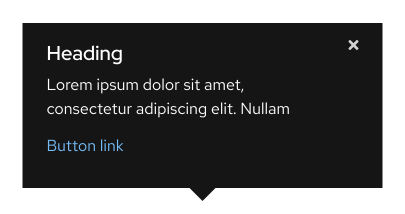
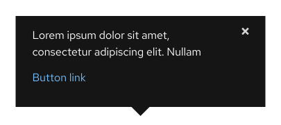
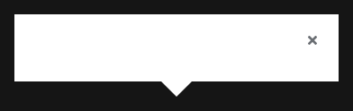
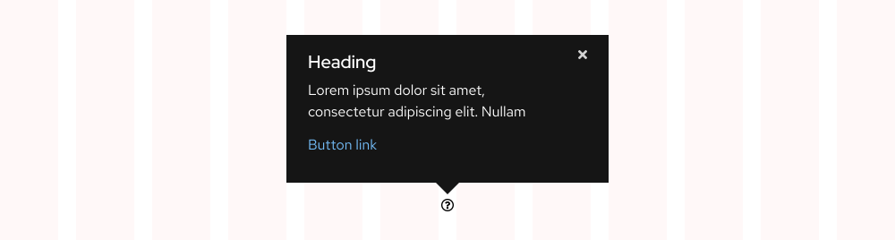
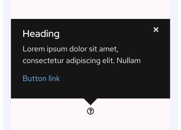

Popover
Style
A popover should include text and interactive elements like a close button and links.
Variants
Black and white are the two popover variants available for use depending on the content and color of the background.
Warning
A heading does not need to be included, but if links are not included either, use a Tooltip component instead.
Black (light backgrounds)

White (dark backgrounds)
With heading
Use for messages that require a heading.
Without heading
Use for messages that do not require a heading.
With drop shadow
A drop shadow gives a popover subtle elevation above light backgrounds.
Without drop shadow
A drop shadow cannot be seen on dark backgrounds, so it is not included.
Theme
For popovers and tooltips, the themes are inverted. For example, light theme popovers are *black and should be used on light backgrounds; dark theme popovers are white and should be used on dark backgrounds.
Black (light backgrounds)
White (dark backgrounds)
Responsive design
A popover has the same proportions and spacing on both large and small screens.
Large screens

Small screens

Spacing
A popover uses PatternFly 4 spacers to define spacing values between elements. Each popover orientation contains the same amount of spacing in between the component and icon.